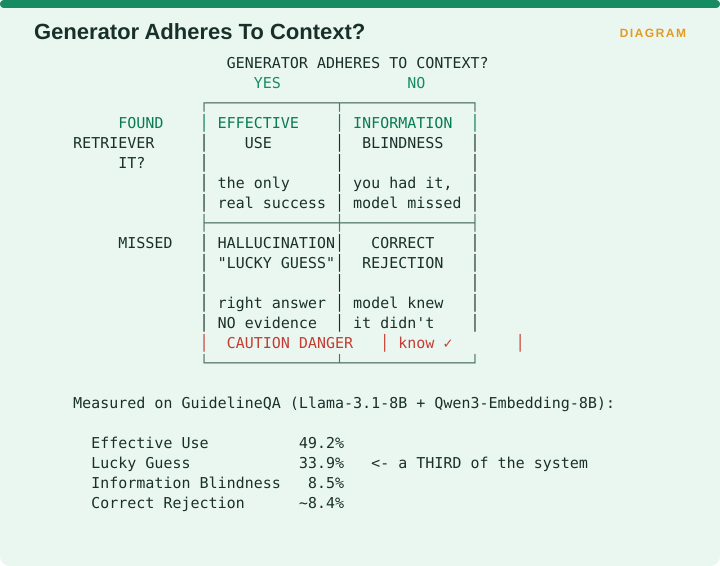
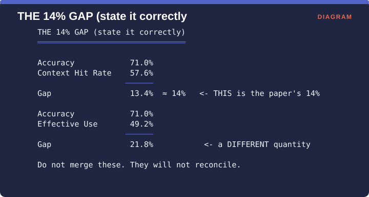

Measuring Retrieval › A.3 Family 3 - The Quadrant Metrics
A.3 Family 3 - The Quadrant Metrics
A.3.1 CUE - Context Utilization Efficiency
One-line: Cross-reference did the retriever find it? against did the generator adhere to it? and sort every query into one of four diagnostic quadrants.
Facets: Alignment | query | judge | E2E | EMERGING VERIFIED Source: Sivakumar, Sugumaran & Qiang, RAG-X · arXiv:2603.03541
The problem it solves
A single accuracy number tells you what fraction of questions the system got right and nothing about how. Two systems can post identical accuracy while one of them is genuinely reading the documents it retrieved and the other is answering from memory with the retrieval step contributing nothing. Those two situations call for completely different work, and no scalar metric distinguishes them.
The construction
CUE builds two binary axes and crosses them. The first is retrieval success, determined by a cascading relevance function that tries an exact substring match, then token-level overlap of at least 0.80, then sentence-level semantic similarity of at least 0.75. The second is generator context adherence, which is judged by a language model and thresholded at 0.7 or above.

Crossing the two axes gives four boxes. If the retriever found the material and the generator adhered to it, that is Effective Use, and it is the only genuine success. If the retriever found it and the generator did not adhere, that is Information Blindness, meaning you had the answer and the model missed it. If the retriever missed and the generator adhered anyway, that is a Lucky Guess, meaning a right answer with no supporting evidence, and it is the dangerous box. If the retriever missed and the generator did not adhere, that is Correct Rejection, meaning the model knew it did not know.
Measured on GuidelineQA using Llama-3.1-8B with Qwen3-Embedding-8B, the four came out at Effective Use 49.2%, Lucky Guess 33.9%, Information Blindness 8.5% and Correct Rejection about 8.4%. A third of the system’s behaviour was in the Lucky Guess box.
The Adherence Paradox
That same pipeline scored 0.84 on context adherence, so the generator looked highly faithful while a third of its correct answers had no retrieved support at all. The paper’s diagnosis is that a high adherence score incorrectly attributes parametric answers to the context, which produces a false sense of grounding.

The figure exists because two different gaps get quoted interchangeably and they are not the same quantity. Accuracy was 71.0% and the context hit rate was 57.6%, so that gap is 13.4%, which rounds to the 14% the paper reports. Accuracy of 71.0% against Effective Use of 49.2% gives a gap of 21.8%, which is a different quantity measuring a different thing. Do not merge them, because they will not reconcile.
Advantages
- Mutually exclusive and jointly exhaustive. Every query lands in exactly one box, so the percentages sum to 100 and can be read directly.
- Localizes the fix. A high Lucky Guess rate means improve retriever coverage, and a high Information Blindness rate means refine the generation prompt. The paper supplies exactly those prescriptions.
- Exposes the Adherence Paradox, which no single scalar metric can.
- Treats Correct Rejection as a first-class outcome rather than a failure, and very few metrics reward a model for appropriate ignorance.
Disadvantages
- Requires ground truth for the retrieval-success axis.
- Two thresholds are involved, being 0.80 and 0.75 for relevance and 0.7 for adherence, and moving any of them moves the quadrants, so report them.
- Uses a language model as judge on the adherence axis, which brings judge drift and judge cost along with it.
- Binary axes discard gradation. A passage scoring 0.69 on adherence and one scoring 0.01 both count as a plain no.
- Validated in one domain so far, which is medical question answering.
Domain examples
Clinical decision support. The origin domain, and Lucky Guess is a patient-safety category here rather than an efficiency one, because a clinically correct answer with no traceable source cannot be audited, defended or corrected.
Legal research. Directly transferable, since an unsupported but correct citation can survive review and therefore creates a risk that only surfaces later.
Consumer chat. Lower stakes, and a Lucky Guess may be perfectly acceptable. Track the number anyway, because if a third of your answers come from the model’s own memory then your retrieval system is doing considerably less work than your invoice suggests.
Recommendation
If you adopt one alignment metric from this entire supplement, adopt CUE. It subsumes the diagnostic value of a faithfulness score, it fixes faithfulness’s central flaw, and its output points at which component to work on next.
Report all four quadrants and never a single derived number, because the decomposition is the entire point.
A.3.2 MIRAGE’s four metrics
One-line: Four mutually exhaustive metrics of RAG adaptability, computed by comparing model behaviour across closed-book, oracle-context, and mixed-context conditions.
Facets: Alignment | query | ref | E2E | EMERGING VERIFIED Source: Park, Moon, Park & Lim, Findings of NAACL 2025, pp. 2883-2900 · arXiv:2504.17137
A note on the name. Four unrelated pieces of work are called MIRAGE, so always pair the name with an arXiv identifier when you cite it or search for it.
The problem it solves
CUE tells you what is happening on your traffic and does not tell you whether the cause lies in the retriever or in the model itself. If Information Blindness is high, you still do not know whether a better retriever would help or whether this particular model simply ignores context. Answering that requires running the same questions under conditions you control.
The construction
Each question is run through three setups.
| Setup | Context given |
|---|---|
| Base | Closed-book - query only |
| Oracle | The correct context |
| Mixed | Correct and noisy contexts - the realistic case |
The dataset is 7,560 curated instances drawn over a 37,800-entry retrieval pool assembled from IfQA, NaturalQA, TriviaQA, DROP and PopQA.
The four metrics

Noise Vulnerability measures how susceptible the model is to noise in the context. Context Acceptability measures its ability to use provided context to reach an accurate answer. Context Insensitivity measures how often it fails to use the context at all. Context Misinterpretation measures how often it uses the context and gets it wrong anyway.
The finding that makes this worth adopting
This is the part no abstract-level reading gives you, and it is why MIRAGE earns a place beside CUE.
Noise Vulnerability and Context Acceptability change drastically with retriever performance. Context Insensitivity and Context Misinterpretation are consistent for a given model regardless of shots or retriever - they depend solely on the LLM’s capabilities.

So the four numbers split into two halves that answer different questions. Noise Vulnerability and Context Acceptability are retriever-sensitive, so you change the retriever to move them. Context Insensitivity and Context Misinterpretation are intrinsic to the language model, so you change the model or the prompt to move them.
The practical consequence is immediate. If Context Insensitivity rises, a new retriever is not the explanation, because that half does not move with the retriever, and something has changed about your generator instead.
That is a genuine causal decomposition, where two of your four numbers tell you to work on retrieval and the other two tell you to change models or prompts. Very few evaluation frameworks offer anything like it.
The paper also notes that this explains why overall performance falls short of perfect even in the Oracle setting, since the model-intrinsic failures persist when the context is known to be correct.
Advantages
- Mutually exhaustive, in the same way CUE is, so the four metrics account for all the behaviour rather than sampling parts of it.
- Separates retriever-fixable from model-fixable failures, which is the single most valuable property in this part.
- Efficient by design. The 37,800-chunk pool is roughly 1% of a full wiki dump, which cuts the computational cost while staying relevant to large benchmarks such as MTEB.
- Public dataset and code, so results are reproducible.
Disadvantages
- It is a Wikipedia-domain benchmark, and your domain is not Wikipedia, so the findings transfer as guidance rather than as your numbers.
- Requires the oracle condition, meaning known-correct context, so it needs a labelled dataset and cannot run on live traffic.
- Three inference runs per question, covering Base, Oracle and Mixed, so generation cost is tripled.
- Noise is treated as present or absent rather than graded. A later critique notes that MIRAGE does not allow granular control over noise levels, so if you need a dose-response curve showing how performance degrades as noise increases, this will not give you one.
Domain examples
Model selection for a RAG deployment. The ideal use. Run MIRAGE across your candidate models and read the model-intrinsic half, which gives a clean comparison uncontaminated by which retriever you happened to pair them with.
Retriever selection. Equally valid using the other half, which makes this the rare framework that supports both decisions from a single run.
Domain-specific production monitoring. A poor fit, since it requires oracle labels and three runs per question.
Recommendation
Use MIRAGE as an offline procurement instrument rather than a monitoring one. Before you commit to a retriever and model pairing, run it and read the two halves separately. If Context Insensitivity is high on your preferred model, no amount of retrieval investment will fix it, and that is the paper’s central practical message.
Pair it with CUE, since MIRAGE tells you which component is weak in general and CUE tells you what is happening on your actual traffic.
Measuring Retrieval · Madhava Gaikwad · First edition, September 2026